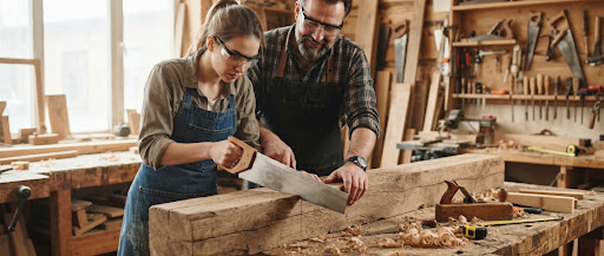

Bois & Chêne de charpente 110 €Atelier Menuiserie : Table basse ou Étagère en Chêne Récupéré
Apprenez les assemblages à mi-bois, le rabotage traditionnel et la finition aux huiles naturelles sur d'anciennes poutres parisiennes déclassées.
Prochaines dates :
3 places restantes
- Sam. 14 Oct (14h00)
- Mer. 18 Oct (18h30)
- Sam. 28 Oct (09h30)
Outillage & bois fournis